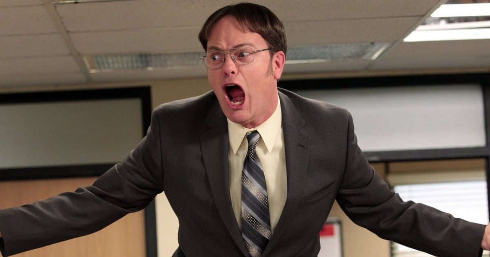
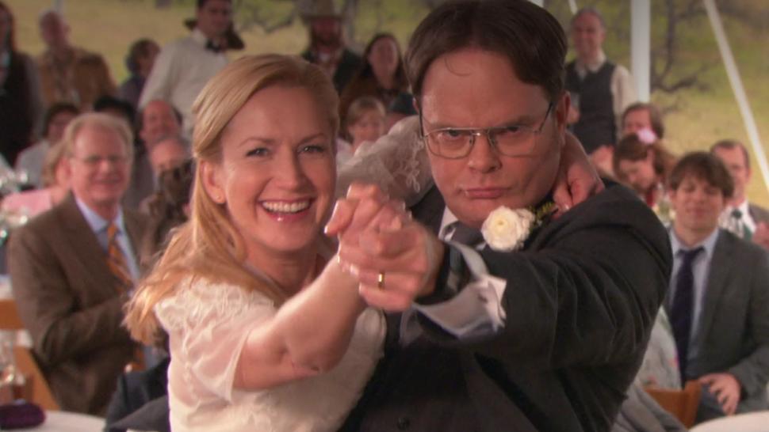

Dwight Schrute

Dwight Schrute, portrayed by Rainn Wilson, is one of the highest-ranking salesmen at Dunder Mifflin, an east coast paper supplier. He has many side business and Entrepreneurial endeavors, such as his beet farm “Schrute Farms,” which he runs a bed and breakfast at, and the owner of the building Dunder Mifflin works in. His notable qualities are lack of social skills and awareness. He is boss Michael Scott's right hand man and he desperately craves approval from authority. His first appearance is in pilot, and his last appearance is in the finale. He is the only member of the cast who has appeared in every episode.

He has an on-again, off-again relationship with fellow employee Angela Martin. Who he ends up marrying in the finale. The relationship between Dwight and Angela is revealed to the viewers in Season 2's episode "Email Surveillance." They try relentlessly to keep their relationship secret. Angela breaks up with Dwight in the Season 4 episode "Dunder Mifflin Infinity" after he "Mercy kills" her cat Sprinkles. Angela immediately begins dating Andy, whom Dwight despises for revenge. They eventually get engaged, although it is clear Angela does not love him. Angela and Dwight begin seeing each other behind Andy's back. When Michael reveals their affair to Andy, Dwight and Andy engage in a duel at the end of Season 5 but decide that neither of them wants Angela back. In the Season 7 episode "Andy's Play," Angela attempts to win Dwight back, but when Dwight is receptive to the idea of rekindling their romance, Angela changes her mind. A few weeks later, Angela begins a relationship with state senator Robert Lipton. Angela's relationship with Senator Lipton leads to marriage and a son Philip. Dwight suspects he is the father of the child, but DNA tests indicate that he is not. Nevertheless, the two rekindle their romance in the Season 9 episode "Moving On." Angela becomes jealous when she realizes that Dwight has begun dating Esther, a woman from a neighboring farm. Angela learns that Senator Lipton is homosexual, and he divorces her publicly at a press conference at which he reveals his sexual orientation. In the penultimate episode, "A.A.R.M.," Dwight realizes that he loves Angela and proposes to her. She accepts and reveals that the DNA results were faked, and Philip is his son after all. In the "Finale," the two are married following Schrute family tradition.

Dwight is often the victim of pranks by his co-worker Jim Halpert, including putting his desk supplies in the snack machine, putting his stapler into jello, and moving his desk into the men's restroom. These pranks tend to exploit his stubborn and gullible nature. However, during "Initiation," Dwight tells Ryan he regrets that he and Jim never got along. In "Traveling Salesmen," Dwight quits and hugs Jim as a farewell, which surprises Jim as he does not know that Dwight quit. Later, Jim is irritated when Andy replaces Dwight and even says that he misses Dwight. Earlier in the same episode, Jim and Dwight make an incredibly efficient sales team, functioning well as a duo and thinking similarly in their tactics. The two were paired together when they began as traveling salesmen at the company.